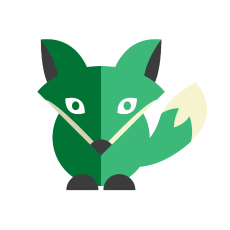

The main driver of my professional and personal development is that I’ve always enjoyed challenges and creative work. This is the reason why I chose to become a programmer. I know that I need to continually learn and hone new skills to be a good programmer and to be able to reach my goals. With 10 years of educational and HR experience, I’m able to work with and manage people smoothly. I know I can use my previous experience and also my freshly gained programming knowledge to be a valuable workmate.
| 2017 | Green Fox Academy |
| Junior Developer | |
| 2008-2010 | University of Pécs, Faculty of Adult Education and Human Resources Development (UP FAEHRD) |
| Andragogy Master Course | |
| 2002-2007 | University of Pécs, FAEHRD |
| Master’s degree in HR Management | |
| 2005/2006 | University of Leipzig - Germany | ERASMUS scholarship |
| 2013 - | Labour Centre of the Government Office - Vas County |
| consultant | |
| 2011-2013 | Labour Centre of the Government Office - Vas County |
| mentor; clerk in charge of supporting measures | |
| 2008-2010 | University of Pécs |
| demonstrator; training organizer | |
| 2007 | Institut Arbeit und Gesundheit der Deutschen Gesetzlichen Unfallversicherung (Dresden) |
| Erasmus scholarship - trainee |
| Language: | JavaScript, HTML, CSS, Python |
| Technologies: | AngularJS, Node.Js, SASS, Semantic UI, MySQL |
| Tools: | Webpack , Github, Karma, Jasmine, Eslint |
| Methodology: | Scrum, TDD |
| 2015 | German language | advanced level (C1) – state language exam, type C |
| 2016 | English language |
| intermediate level (B2) - state language exam, type C |
I've started programming in the autumn of 2016. I took part in a very intensive and effective course in Budapest at Green Fox Academy where I've learned front-end technologies. The following modules have benn completed: command line, version control, developer tools, HTML and CSS, Javascript, server-side programming, frameworks and libraries, databeses and testing.
Through many tasks I have learned the basics of the programming and used this knowledge in more complex projects. If you are interested in the details, click on the images!
I used and to build an image gallery with thumbnail carousel.
var rightButton = document.querySelector(".right-arrow");
rightButton.addEventListener("click", right_direction);
var container = document.querySelector("#main-image");
var image = document.createElement("img");
var i = 0;
image.setAttribute("src", images[i]);
container.appendChild(image);
function right_direction(){
i++;
if(images.length > i) {
image.setAttribute("src", images[i]);
} else {
image.setAttribute("src", images[0]);
i = 0;
}
}I used and to build a ToDo app, witch communicate with a server.
function addItem() {
var listElement = document.createElement("li");
var todo = document.createElement("span");
var trash = document.createElement("i");
trash.className = "ion-trash-a";
var checkbox = document.createElement("i");
checkbox.className = "ion-android-checkbox-outline-blank";
checkbox.addEventListener("click", function(event){
console.log(event);
console.log(this);
});
todo.textContent = inputField.value;
inputField.value = "";
listElement.appendChild(todo);
listElement.appendChild(checkbox);
listElement.appendChild(trash);
ul.appendChild(listElement);
var xhr = new XMLHttpRequest();
xhr.open('POST', "https://mysterious-dusk-8248.herokuapp.com/todos");
xhr.setRequestHeader("Content-Type", "application/json");
xhr.send(JSON.stringify({
"text": todo.textContent
}));
}I used and to build a musicplayer.
function play(event){
console.log(event.currentTarget.dataset.id);
currentTrack = event.currentTarget.dataset.id
mainPlayer.setAttribute("src", tracks[currentTrack].source);
var actualAlbumToLogOut = tracks[currentTrack].album;
var actualArtistToLogOut = tracks[currentTrack].artist;
var actualTrack =
document.querySelector(".currently-playing-album-infos");
actualTrack.innerHTML = actualAlbumToLogOut
+ ': <br><span class="album-title">'
+ actualArtistToLogOut + '</span>';
cianMark();
}The team Malachit used and to build the front-end of an Rss-reader.
<form class="ui large form" id="login-box" method="post"
name="signin" novalidate>
<div class="field">
<div class="ui left icon input">
<i id="mail-outline-icon" class="mail outline icon"></i>
<!-- Email inputfield -->
<input class="field" type="email"
placeholder="example@gmail.com" name="email"
ng-model="loginCtrl.email" ng-required="true">
</div>
<div ng-show="signin.email.$touched &&
signin.email.$invalid">
<small class="error-message">Invalid e-mail adress</small>
</div>
</div>
<div class="field">
<div class="ui left icon input">
<i id="lock-icon" class="lock icon"></i>Tamás is a reserved, calm and diligent student, with a strong internal drive for self-development. He enjoys working with clear systems and processes. He tends to be traditional and task-oriented and likes to have clear goals and realistic deadlines. He is very thorough in problem solving, with great attention to detail. He would be a great junior developer in a supportive environment where frequent feedback is present and continuous mentoring is available. Green Fox Academy
Photo: Green Fox Academy
{kind=link}
{kind=link}
{kind=link}
{kind=link}
{kind=link}